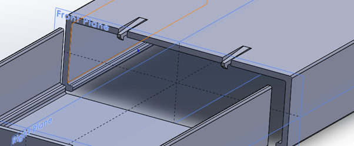
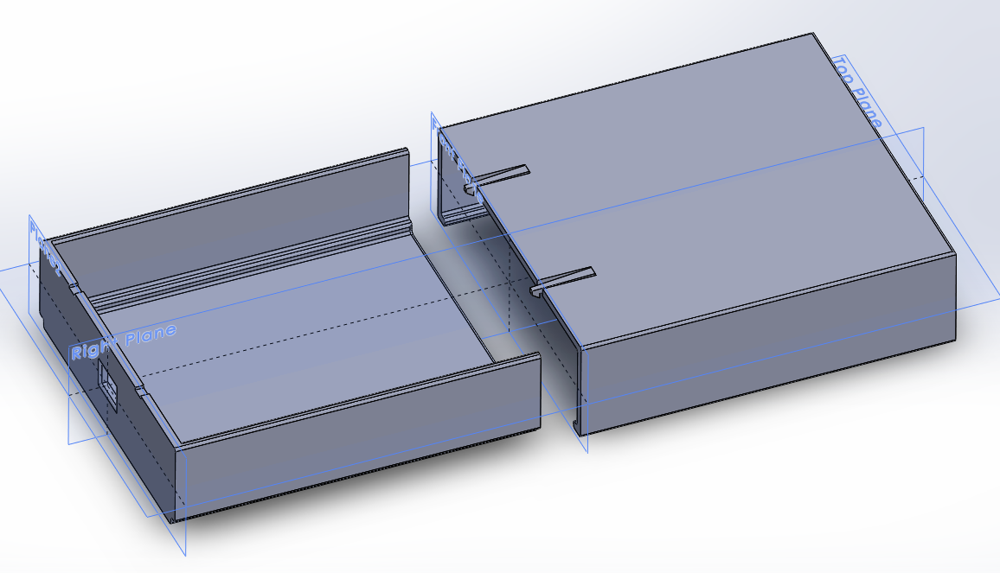

Voor het vak Smart Technology hebben wij enkele workshops 3D printing gevolgd. Hierin leerden wij de benodigde informatie om een electronica behuizing voor onze Arduino IDE te ontwerpen. De concrete opdracht beschrijving is als volgt:
Ontwerp met SolidWorks een electronica behuizing waarin een microprocessor, sensor(s), Wifi-module en evt display kunnen worden ondergebracht.
Maak een prototype met de FDM printtechniek en integreer de elektronische componenten in de behuizing.
Maak een ontwerpverslag waarin je methodiek/aanpak en het resultaat duidelijk wordt gemaakt.
Hoe het ontwerp er uit mocht komen te zien was volledig aan ons, zolang het maar aan een aantal randvoorwaarden voldeed. Deze randvoorwaarden zijn in ons volledig ontwerpverslag te vinden. Klik hier voor ons volledig ontwerpverslag.
Wij hebben met Clickfingers gewerkt om het doosje goed dicht te maken. Dit ziet er als volgt uit:

Ons eindresultaat ziet er zo uit:

Wij hebben met Solidworks gewerkt. Wij zijn begonnen met het ontwerpen van de bovenkant van het doosje. Een korte omschrijving van hoe wij te gang zijn gegaan:
Teken met de extruded boss/base functie op de Front Plane een vierkant met de hoogte en de breedte die je eerder hebt vastgesteld. Verlaat de sketch en stel ook de diepte in. Je hebt nu een blok getekend.
Met de shell functie kan je het blok ‘hol’ maken. Selecteer de vlakken (onder- en voorwand) die je wil verwijderen en stel de wanddikte van 3.2mm in.
Teken de onderkant op dezelfde manier als de bovenkant. Maak een blok met de extruded boss/base functie. Houd rekening dat de bovenkant over de onderkant heen schuift. Neem daarom 1 wanddikte plus tolerantie in van de hoogte, breedte en lengte.
Gebruik de shell functie op de achter- en bovenwand.
Met de extruded cut functie kan je een gat maken in het doosje voor de micro-usb aansluiting met de juiste afmeting en positie.
Om ervoor te zorgen dat de deksel maar op één manier op de onderkant van schuiven, moeten er gleufjes komen waarin beide onderdelen precies in kunnen passen. Maak op de bovenkant van het doosje een extruded boss/base op de zijvlakte aan de binnenkant van het doosje, helemaal onderin. Maak deze 1 wanddikte hoog en 1 wanddikte breed. Geef het de lengte van het hele doosje. Doe dit aan beide zijden.
Op de onderkant van het doosje, maak een extruded cut aan de buitenkant onderin de hoek van het doosje. Maak deze 1 wanddikte hoog en 1 wanddikte breed en houd rekening met schuiftolerantie(0,4mm). Doe dit aan beide zijden. De shell zou mee moeten veranderen, zo niet voer deze stap opnieuw uit na de extruded cuts.
Voeg fillets toe aan alle randjes.
Nu moet er alleen nog een systeem komen voor het vastzetten van de deksel op het doosje. In SolidWorks is er een ingebouwde clickfinger functie. Er worden twee clickfingers geplaatst aan de deksel van het doosje. Maak een extruded cut aan de bovenzijde van het doosje tegen de rand aan, ongeveer op een vierde van de breedte. Gebruik de spiegelfunctie om deze te dupliceren.
Voeg een clickfinger toe op de zijde waar de extruded cut plaatsvindt, in de lengte van het doosje en naar beneden gericht. Het kopje van de clickfinger moet 0.25mm uitsteken i.v.m. tolerantie. Gebruik de spiegelfunctie op de hele clickfinger om deze te dupliceren.